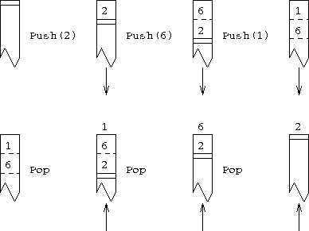
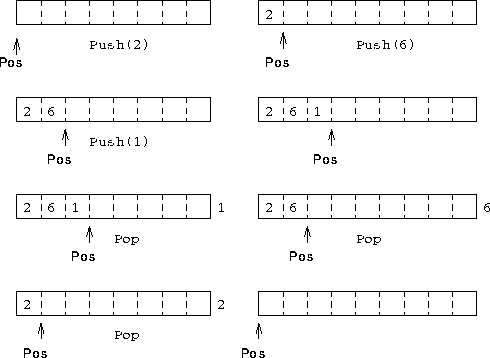

Figure 10: How a Stack Works
A stack can be thought of as a pile of things that can only be accessed from the top. You can put something on the top of the pile: a Push action, and you can grab things off the top of the pile: a Pop action.
The diagrams show the conventional visualisation of a stack. As elements are pushed onto the top of the stack, the previous top elements get pushed down, as things are popped off the top the lower stack entries move towards the top.

Figure 11: How a Stack Could be Implemented
These diagrams show how we will simulate the stack using an array with a pointer to indicate where the top of the stack is. As elements are pushed onto the stack they are stored in the array and the `top' position moves right; as things are popped off, the top of the stack moves left. From this description it can be seen that we need three objects to simulate a stack:
This data is needed by both the Push and Pop procedures, and should be made global.